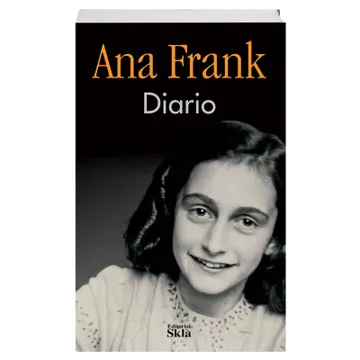

El Diario de Ana Frank - Ana Frank

El Diario de Ana Frank es una obra autobiográfica que recoge las memorias de Ana Frank, una adolescente judía que se escondió junto a su familia y otras personas en un anexo secreto en Ámsterdam durante la ocupación nazi en la Segunda Guerra Mundial.
Escrito entre 1942 y 1944, el diario narra la vida cotidiana, los temores, las esperanzas y los pensamientos profundos de Ana mientras vivía oculta para evitar la persecución.
Psdt: Este fue el primer libro leido por Aleida Nahomi.
La Elite - Kiera Cass

La Élite sigue a America Singer mientras compite con otras cinco chicas por el amor del príncipe Maxon y la corona de Illéa. America enfrenta un triángulo amoroso entre Maxon y su antiguo amor, Aspen, mientras lidia con secretos del palacio y las tensiones políticas del reino. Es un libro sobre decisiones difíciles, romance y desafíos en un sistema injusto.
La Elegida - Kiera Cass
La Elegida sigue a America Singer en la fase final de La Selección. Quedan solo cuatro chicas, y America debe decidir entre su amor por el príncipe Maxon y su lealtad hacia Aspen. Mientras tanto, la situación política de Illéa se vuelve más peligrosa debido a las rebeliones, y America descubre secretos cruciales sobre el sistema de castas. El libro culmina en decisiones que cambiarán su futuro y el de todo el reino.
La Corona - Kiera Cass

La Corona sigue a Eadlyn Schreave, la hija del príncipe Maxon y America, quien debe organizar su propia Selección para elegir un esposo entre varios chicos. Eadlyn, inicialmente reacia al amor y más centrada en el deber de ser reina, comienza a cuestionar sus sentimientos mientras enfrenta presiones políticas y sociales en Illéa. A lo largo del libro, Eadlyn aprende sobre el amor, el sacrificio y la importancia de liderar, mientras toma decisiones que cambiarán su futuro y el de su reino.
La Heredera - Kiera Cass

La Heredera sigue a Eadlyn Schreave, la hija de Maxon y America, quien debe llevar a cabo su propia Selección para elegir un esposo, aunque no está interesada en el amor. Eadlyn prefiere centrarse en sus deberes como futura reina, ya que su padre está enfermo. A medida que avanza la competencia, Eadlyn empieza a cuestionar sus propios sentimientos y a enfrentar los desafíos de ser una líder en un reino inestable, mientras lidia con las tensiones familiares y políticas.
A través de mi Ventana -
Ariana Godoy

A través de mi ventana de Ariana Godoy sigue a Raquel, una joven que ha estado observando a su vecino Ares en secreto. A pesar de la distancia emocional que él mantiene, Raquel se siente atraída por él. Cuando ambos comienzan a acercarse, surge una conexión profunda, pero deben enfrentar secretos familiares, malentendidos y sus propios miedos. La novela explora el amor juvenil, las inseguridades y el crecimiento personal, mientras Raquel y Ares navegan por sus sentimientos en medio de complicaciones y obstáculos.